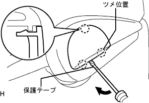
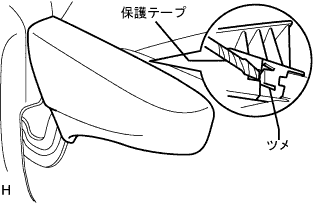
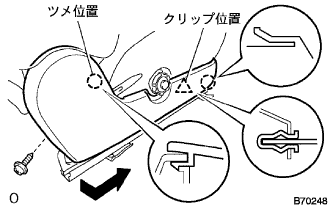
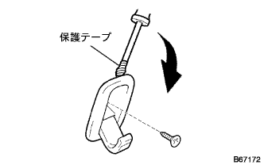
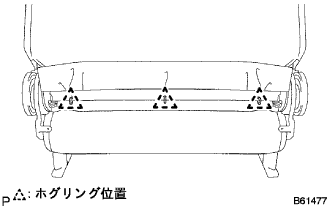
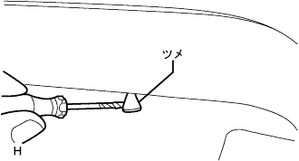
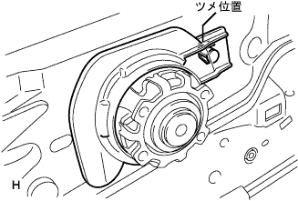
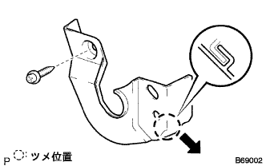
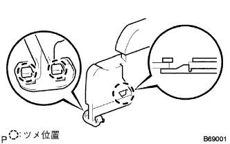

Front seat ASSY RH decomposition |
| 1. RH seat Front Seat Track Bracket LWR RR RH is removed |
 |
Remove the four nuts and remove the left and right front seat track brackets LWR RR RH.
| 2. Remove the front sheet leg ASSY RH |
Remove the two nuts and remove the front seat leg ASSY RH.
| 3. Remove the front seat leg cover RH |
Remove the front seat leg cover RH.
| 4. Front sheet leg cover LH (RH seat yo) should be removed |
Remove the front seat leg cover LH.
| 5. Remove the front seat headrest ASSY |
Remove the front seat headrest ASSY.
| 6. Remove Vertical Adjusta Cover RH |
|  |
Use a minus thin -blade driver with a protective tape to remove the claws and remove the vertical agasta cover RH.
| 7. Remove Vertical Adjusta Handle RH |
Remove the two screws and remove the Vertical Adjusta handle RH.
| 8. Reclining Adjustment Relley Relley Handle RH is removed |
|  |
With the handle pulled up, use a minus thin -blade driver with a protective tape to remove the claws, and remove the reclining adjuster release handle RH.
| 9. Remove the front seat cushion shield RH |
Take off the screw.
Remove the upper claw on the upper side.
|  |
Shift the direction of the arrow in the figure to remove the clip and claws, and remove the front seat cushion shield RH.
| 10. Remove the front seat cushion shield Inn RH |
Take off the screw.
Remove the upper claw on the upper side.
 |
Shift the cover in the direction of the arrow in the figure to remove the clip and claws, and remove the front seat cushion shield INN RH.
| 11. Remove the front seat innabelt ASSY RH |
Cut the wire harness clamp.
Remove the bolt and remove the front seat innabelt asy RH.
| 12. Remove the front seat back hook |
Wake up the hook.
Take off the screw.
|  |
Use a flathead driver with a protective tape to remove the front seat cross -hook.
| 13. Remove the front seat headrest support |
|  |
Turn the front seat cross -cover cover and remove the three hogling.
Remove two hogling.
 |
Remove the claws and remove two front seat headrest support.
| 14. Front seat backpad (cover Tsuki) RH is removed |
Take off the front seat Batsuku cover & pad RH.
| 15. Front seat cushion cover & pad RH removed |
|  |
Use a flathead screwdriver with a protective tape to cause the claws in the front seat cushion cover and pad RH RH front.
Remove the J hook on the front of the cushion cover.
Remove the hogling and remove the front seat cushion cover & pad RH.
| 16. Remove Vertical Adjusta Spacer |
|  |
Remove the claws and remove the vertical agasta spacer.
| 17. Reclining adjuster inside cover RH (RH seat yo) |
|  |
Remove the screw and remove the claws and remove the reclining adjustment side cover RH ((RH seat yo)).
| 18. Reclining Adjustment Inside Cover LH (RH Seat Yo) |
Remove the screw and remove the claws, and remove the reclining adjustment side cover LH (RH seat yo).
| 19. Reclining Adjustment Inside Cover RH is removed |
 |
Remove the screw and remove the reclining adjustment side cover RH.
| 20. Reclining adjuster inside cover LH removed |
Remove the screw and remove the reclining adjustment side cover LH.
| 21. Front seat cushion shield LWR RH is removed |
|  |
Remove the claws and remove the front seat cushion shield LWR RH.
| 22. Front seat cushion shield LWR LH removed |
Remove the claws and remove the front seat cushion shield LWR LH.